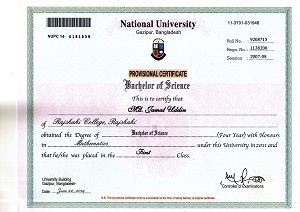

Myself
I am Jamal . I completed M.Sc in Mathematics from Dhaka College under National University in 2015. From Softtech-IT I completed Advanced WordPress Development Course.
Now A Web application Development-PHP course is continuing under SEIP (Skills for Employment Investment Program).Which is implemented by: BASIS Institute of Technology & Management (BITM), organized By: Bangladesh Association of Software and Information Services (BASIS) and supported by: SEIP, Finance Division, Ministry of Finance, Govt.of Bangladesh.
My Family
My family consists of five members. My father,mother,brother,sister and me. My father is a senior teacher of Rajshahi Cantonment Board High School. My mother is a housewife. My brother works as a sells engineer in KHAN AND DEEN TRADERS. My sister Passed H.Sc in 2014.Now she is married.
My Friends
I have some friends . They are various quality. Doctor, Engineer, Teacher and others . I love travelling. Last year I visited Coxsbazar with my friends Rabiul Islam who is a Software Engineer.